List of submissions
It follows the code, evaluation and a map of the albedo (and its difference to the default albedo) on the last time step of all Chiaroscuro submissions to /submissions sorted by rank.
Captain Ahab: Sneaky little whitecaps and a low sun
path: /submissions/whitecaps.jl
rank: 1. of 13 submissions
name = "Captain Ahab"
description = "Sneaky little whitecaps and a low sun"
function albedo(inputs)
(; land_fraction, sea_ice_concentration, snow_cover) = inputs
(; cos_zenith, surface_wind_speed, sea_surface_temperature) = inputs
# water reflects more when the sun is low (small cos_zenith), like a sunset over the sea
water = 0.05 + 0.15 * (1 - cos_zenith)^5
# whitecaps from breaking waves cover more of the ocean the stronger the wind
whitecaps = clamp(3.8e-6 * surface_wind_speed^3.4, 0, 1)
water = (1 - whitecaps) * water + whitecaps * 0.5
# melting sea ice (close to freezing) is darker because of melt ponds
ice = sea_surface_temperature > 272 ? 0.45 : 0.65
ocean = (1 - sea_ice_concentration) * water + sea_ice_concentration * ice
land = 0.3 + 0.5 * snow_cover
a = (1 - land_fraction) * ocean + land_fraction * land
return clamp(a, 0, 1)
end
Evaluation, RMSE in Kelvin:
score: 3.6574land_score: 5.4805ocean_score: 2.5951tropical_score: 2.7165polar_score: 5.4219generalisation_score: 3.3582
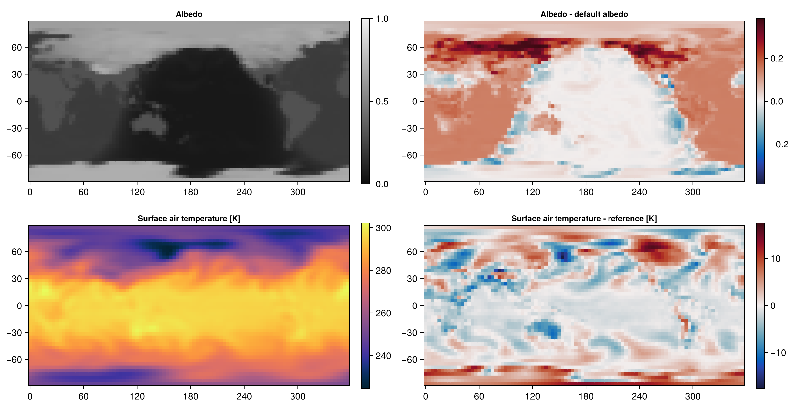
Bradley: baseline with lat lon
path: /submissions/bsc_baseline.jl
rank: 2. of 13 submissions
name = "Bradley"
description = "baseline with lat lon"
function albedo(inputs)
(; latd, lond, land_fraction, sea_ice_concentration) = inputs
(; high_vegetation_cover, low_vegetation_cover, low_vegetation_leaf_area) = inputs
# land: the equation from section 7, with latitude and longitude computed as in section 3
cos_latd = cosd(latd)
sin_lond = sind(lond)
land = 0.9197872 / (((low_vegetation_leaf_area + exp(high_vegetation_cover + cos_latd)) - (sin_lond * (0.28641453 - ((cos_latd * sin_lond) + high_vegetation_cover)))) + low_vegetation_cover)
# ocean: open water and sea ice (the equation was fitted on land only)
ocean = 0.06 * (1 - sea_ice_concentration) + 0.6 * sea_ice_concentration
# weight by the fraction of land in the grid cell, and keep the albedo between 0 and 1
a = (1 - land_fraction) * ocean + land_fraction * land
return clamp(a, 0, 1)
end
Evaluation, RMSE in Kelvin:
score: 3.8968land_score: 5.8445ocean_score: 2.7606tropical_score: 2.7696polar_score: 6.3088generalisation_score: 3.6080
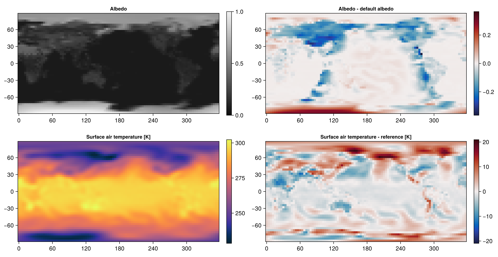
Johanna Gring: Symbolic regression of a neural network
path: /submissions/johanna_gring.jl
rank: 3. of 13 submissions
name = "Johanna Gring"
description = "Symbolic regression of a neural network"
function albedo(inputs)
(; latd, lond, snow_cover, high_vegetation_cover, soil_moisture_1, lond) = inputs
(; high_vegetation_cover, low_vegetation_cover, high_vegetation_leaf_area, low_vegetation_leaf_area) = inputs
snowc = snow_cover
a = exp(snowc + (-1.2128508 - ((-0.23823759 * ((0.83241564 - high_vegetation_cover) * ((((snowc - low_vegetation_cover) + ((cosd(lond) - snowc) - (soil_moisture_1 * (((cosd(lond) - high_vegetation_cover) - -1.3156883) + (high_vegetation_leaf_area + (((cosd(lond) - low_vegetation_leaf_area) - snowc) - (-1.3156883 - cosd(lond)))))))) * (1.1545302 - snowc)) - low_vegetation_leaf_area))) + high_vegetation_cover)))
return clamp(a, 0, 1)
end
Evaluation, RMSE in Kelvin:
score: 3.9112land_score: 5.8330ocean_score: 2.7986tropical_score: 2.5752polar_score: 7.2673generalisation_score: 4.0089
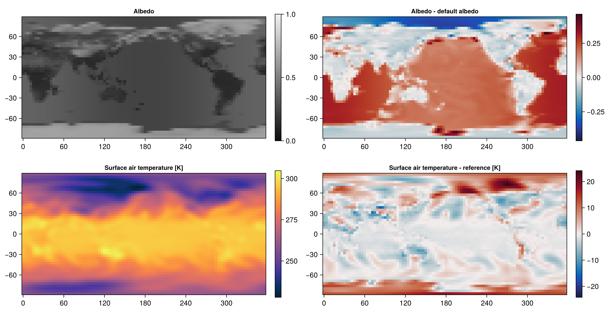
Conchúr Ó Cathasaigh: Stepwise linear regression part ii
path: /submissions/conchur_submission_ii.jl
rank: 4. of 13 submissions
name = "Conchúr Ó Cathasaigh"
description = "Stepwise linear regression part ii"
function albedo(inputs)
(; latd, lond, land_fraction, sea_ice_concentration) = inputs
(; high_vegetation_cover, low_vegetation_cover, low_vegetation_leaf_area) = inputs
(; snow_depth, surface_roughness, snow_cover, soil_moisture_2) = inputs
# stepwise linear regression
sin_lond = sind(lond)
a = 0.22197745760556203 -
0.032274522809054865 * (sin_lond - 0.6670778758303375) / 0.274440687488348 -
0.11380252048459291 * (high_vegetation_cover - 0.23742209374904633) / 0.3569721281528473 -
0.10965433007409642 * (low_vegetation_cover - 0.4988933205604553) / 0.42057308554649353 -
0.01059268657283943 * (low_vegetation_leaf_area - 1.0299466848373413) / 0.8743666410446167 +
0.010786533748243857 * (snow_depth - 0.8201590180397034) / 2.7313692569732666 -
0.042870947574265864 * (surface_roughness - 0.41663917899131775) / 0.5517367720603943 +
0.38398457427484783 * (snow_cover - 0.11288916319608688) / 0.3131408989429474 +
0.13552342532092526 * (land_fraction - 0.9793006181716919) / 0.07042635232210159 -
0.10775197736168596 * (soil_moisture_2 - 0.22972384095191956) / 0.14154864847660065
# keep the albedo between 0 and 1
return clamp(a, 0, 1)
end
Evaluation, RMSE in Kelvin:
score: 4.0048land_score: 5.9874ocean_score: 2.8532tropical_score: 2.9780polar_score: 6.3000generalisation_score: 3.9510
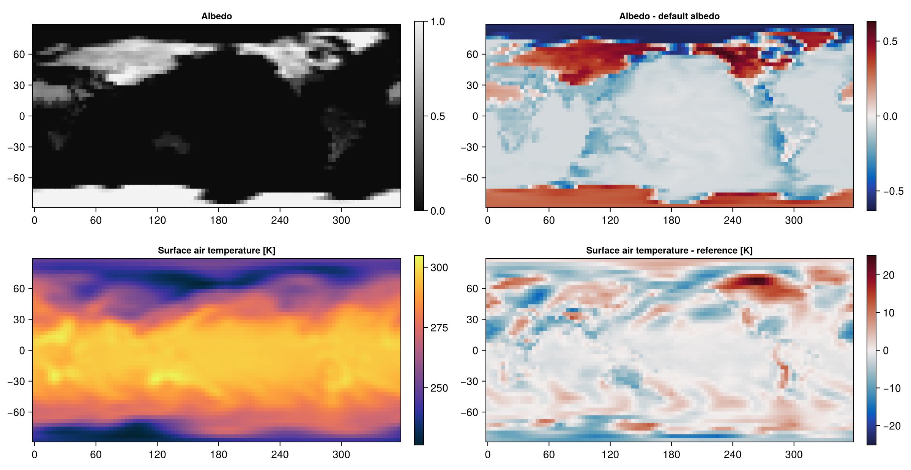
Emma: Symbolic regression of a neural network with additional variables and longer training
path: /submissions/Emma_allen.jl
rank: 5. of 13 submissions
name = "Emma"
description = "Symbolic regression of a neural network with additional variables and longer training"
function albedo(inputs)
(; land_fraction, sea_ice_concentration) = inputs
(; snow_cover, high_vegetation_cover, low_vegetation_cover, low_vegetation_leaf_area) = inputs
snowc = snow_cover
# land: fitted equation
land = exp(snowc - 2.1602917) *
exp(exp(-0.28895104 * low_vegetation_cover * exp(low_vegetation_leaf_area - snowc) -
exp(high_vegetation_cover) * high_vegetation_cover))
# ocean: open water and sea ice
ocean = 0.06 * (1 - sea_ice_concentration) + 0.6 * sea_ice_concentration
# weight by land fraction and constrain albedo to [0, 1]
a = (1 - land_fraction) * ocean + land_fraction * land
return clamp(a, 0, 1)
end
# chosen equation: albedo = exp(snowc + -2.1602917) * exp(exp((low_vegetation_cover * (exp(low_vegetation_leaf_area - snowc) * -0.28895104)) - (exp(high_vegetation_cover) * high_vegetation_cover)))
Evaluation, RMSE in Kelvin:
score: 4.0251land_score: 5.9452ocean_score: 2.9274tropical_score: 2.9541polar_score: 6.6876generalisation_score: 4.0093
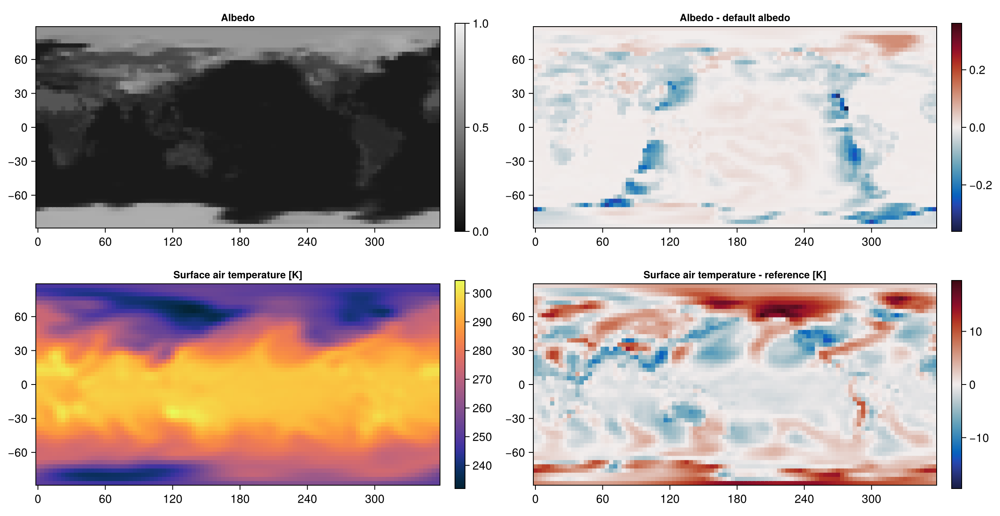
Snowman: Land, ocean, sea ice and snow
path: /submissions/land_ocean_snow.jl
rank: 6. of 13 submissions
name = "Snowman"
description = "Land, ocean, sea ice and snow"
function albedo(inputs)
(; land_fraction, sea_ice_concentration, snow_cover) = inputs
# ocean: blend open ocean and sea ice
ocean = 0.06 * (1 - sea_ice_concentration) + 0.6 * sea_ice_concentration
# land: blend bare land and snow
land = 0.3 * (1 - snow_cover) + 0.8 * snow_cover
# weight by the fraction of land in the grid cell
a = (1 - land_fraction) * ocean + land_fraction * land
return clamp(a, 0, 1)
end
Evaluation, RMSE in Kelvin:
score: 4.0561land_score: 6.1758ocean_score: 2.7937tropical_score: 3.3195polar_score: 5.9090generalisation_score: 3.8093
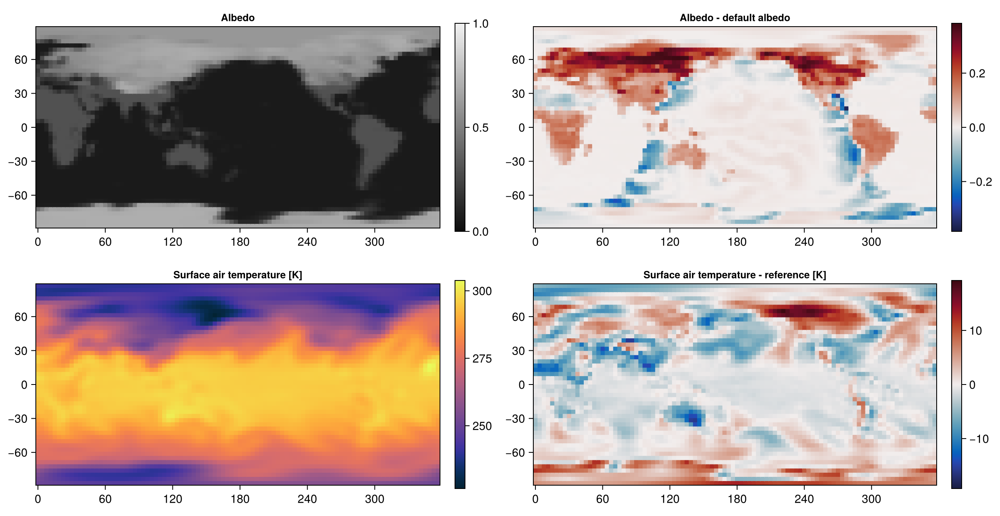
Bradley: Symbolic regression from the example notebook
path: /submissions/symbolic_regression.jl
rank: 7. of 13 submissions
name = "Bradley"
description = "Symbolic regression from the example notebook"
function albedo(inputs)
(; low_vegetation_leaf_area, surface_roughness) = inputs
return (-0.13820925 / ((-0.20815352 - low_vegetation_leaf_area) - (surface_roughness / 0.039272778))) - -0.1343905
end
Evaluation, RMSE in Kelvin:
score: 4.0900land_score: 5.9667ocean_score: 3.0338tropical_score: 3.1424polar_score: 6.6349generalisation_score: 4.3734
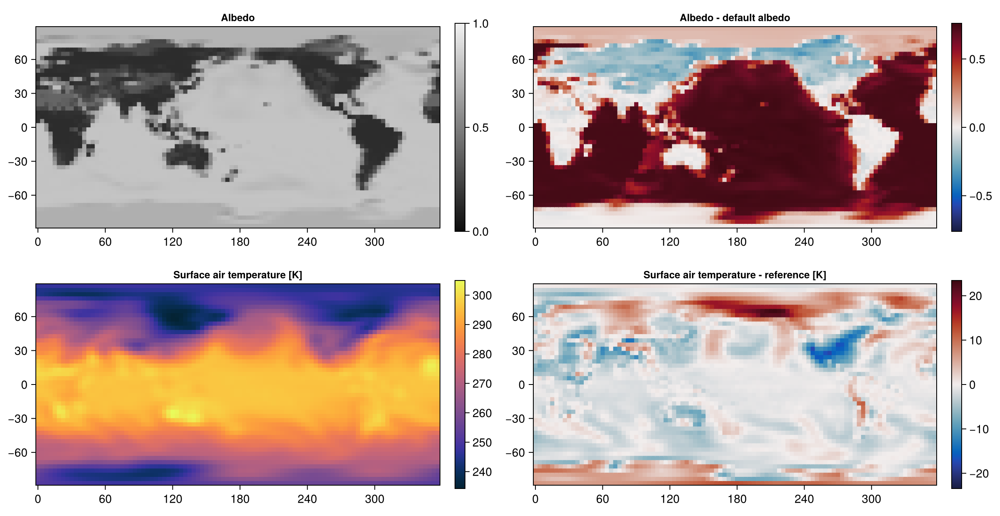
Bella: Symbolic regression of a neural network with additional variables and longer training
path: /submissions/bella_submission.jl
rank: 8. of 13 submissions
name = "Bella"
description = "Symbolic regression of a neural network with additional variables and longer training"
function albedo(inputs)
(; land_fraction, sea_ice_concentration) = inputs
(; snow_cover, high_vegetation_cover, low_vegetation_cover, soil_moisture_1) = inputs
snowc = snow_cover
# land: Bella fitted equation
land = exp(
(snowc - (high_vegetation_cover +
exp(low_vegetation_cover + soil_moisture_1 - 1.7837389))) *
exp(low_vegetation_cover / -1.6185225 + low_vegetation_cover) -
0.9558738
)
# ocean: open water and sea ice
ocean = 0.06 * (1 - sea_ice_concentration) + 0.6 * sea_ice_concentration
# weight by land fraction and constrain albedo to [0, 1]
a = (1 - land_fraction) * ocean + land_fraction * land
return clamp(a, 0, 1)
end
# chosen equation: albedo = exp(snowc + -2.1602917) * exp(exp((low_vegetation_cover * (exp(low_vegetation_leaf_area - snowc) * -0.28895104)) - (exp(high_vegetation_cover) * high_vegetation_cover)))
# bella submission equation: chosen equation: albedo = exp(((snowc - (high_vegetation_cover + exp(low_vegetation_cover + (soil_moisture_1 + -1.7837389)))) * exp((low_vegetation_cover / -1.6185225) + low_vegetation_cover)) + -0.9558738)
Evaluation, RMSE in Kelvin:
score: 4.1961land_score: 6.4255ocean_score: 2.8577tropical_score: 2.7870polar_score: 7.0131generalisation_score: 4.2662
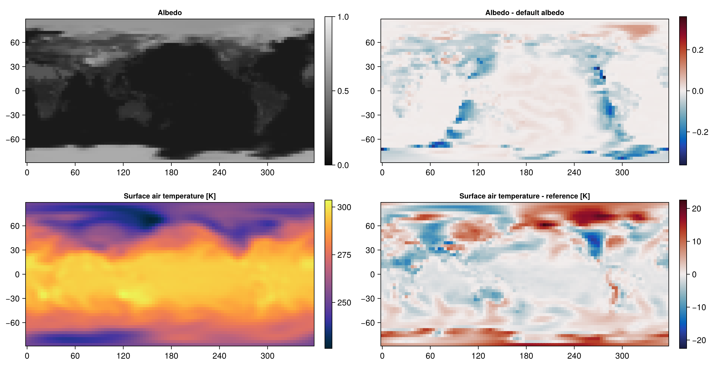
GiorgiaAdam: Symbolic regression of a neural network but BETTER
path: /submissions/giorgiaAdam.jl
rank: 9. of 13 submissions
name = "GiorgiaAdam"
description = "Symbolic regression of a neural network but BETTER"
function albedo(inputs)
(; latd, lond, land_fraction, sea_ice_concentration) = inputs
(; high_vegetation_cover, low_vegetation_cover, low_vegetation_leaf_area, snow_cover) = inputs
# land: the equation from section 7, with latitude and longitude computed as in section 3
cos_latd = cosd(latd)
sin_lond = sind(lond)
sin_latd = sind(latd)
cos_lond = cosd(lond)
snowc = snow_cover
land = (snowc + 0.6877954) / (exp(high_vegetation_cover) * (((low_vegetation_cover * (low_vegetation_leaf_area + sin_lond)) / exp(snowc)) + 2.0469608))
# ocean: open water and sea ice (the equation was fitted on land only)
ocean = 0.06 * (1 - sea_ice_concentration) + 0.6 * sea_ice_concentration
# weight by the fraction of land in the grid cell, and keep the albedo between 0 and 1
a = (1 - land_fraction) * ocean + land_fraction * land
return clamp(a, 0, 1)
end
Evaluation, RMSE in Kelvin:
score: 4.3225land_score: 6.6018ocean_score: 2.9592tropical_score: 3.0627polar_score: 6.7997generalisation_score: 4.5780
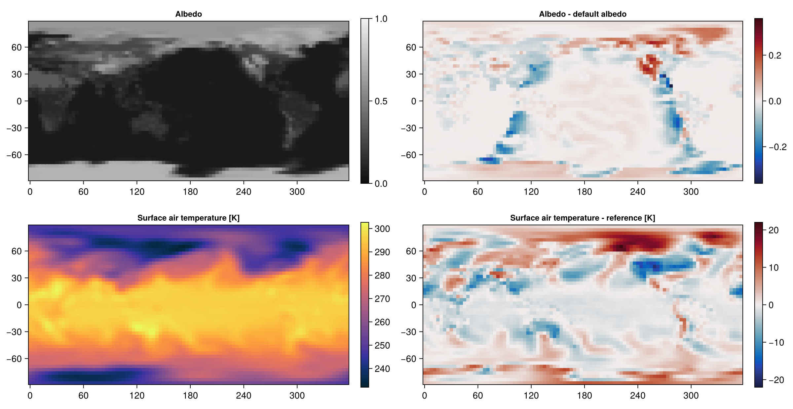
Robin Hood: The forest, dark and deep
path: /submissions/vegetation.jl
rank: 10. of 13 submissions
name = "Robin Hood"
description = "The forest, dark and deep"
function albedo(inputs)
(; land_fraction, sea_ice_concentration, snow_depth) = inputs
(; high_vegetation_cover, low_vegetation_cover, high_vegetation_leaf_area) = inputs
ocean = 0.06 + 0.54 * sea_ice_concentration
# bare soil is bright, forests are dark, grass is in between
bare_soil = max(1 - high_vegetation_cover - low_vegetation_cover, 0)
land = 0.35 * bare_soil + 0.2 * low_vegetation_cover + 0.13 * high_vegetation_cover
# snow is brighter the deeper it is, but dense forests (high leaf area) hide it
snow_cover = snow_depth / (snow_depth + 0.02)
visible = exp(-0.5 * high_vegetation_leaf_area * high_vegetation_cover)
land += 0.5 * snow_cover * visible
a = (1 - land_fraction) * ocean + land_fraction * land
return clamp(a, 0, 1)
end
Evaluation, RMSE in Kelvin:
score: 4.3592land_score: 6.4067ocean_score: 3.1960tropical_score: 2.8287polar_score: 8.0155generalisation_score: 4.7874
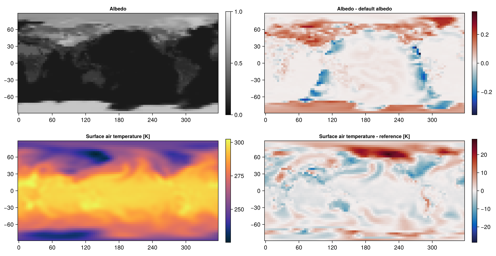
Conchúr Ó Cathasaigh: Stepwise linear regression for albedo
path: /submissions/conchur_submission.jl
rank: 11. of 13 submissions
name = "Conchúr Ó Cathasaigh"
description = "Stepwise linear regression for albedo"
function albedo(inputs)
(; latd, lond, land_fraction, sea_ice_concentration) = inputs
(; high_vegetation_cover, low_vegetation_cover, low_vegetation_leaf_area) = inputs
(; high_vegetation_leaf_area, snow_depth, soil_moisture_1) = inputs
# linear regression on standardised features (training-set mean and std),
# fitted on all grid cells: land, ocean and sea ice
sin_lond = sind(lond)
a = 0.35404542313636833 -
0.03747681963527709 * (sin_lond - 0.6670778758303375) / 0.274440687488348 -
0.1581692711679168 * (high_vegetation_cover - 0.23742209374904633) / 0.3569721281528473 -
0.10786478297918996 * (low_vegetation_cover - 0.4988933205604553) / 0.42057308554649353 -
0.011140665355197012 * (high_vegetation_leaf_area - 1.2122645378112793) / 1.4638147354125977 -
0.02054918790951849 * (low_vegetation_leaf_area - 1.0299466848373413) / 0.8743666410446167 +
0.0473728732784119 * (snow_depth - 0.8201590180397034) / 2.7313692569732666 +
0.04234441245539077 * (soil_moisture_1 - 0.1947755068540573) / 0.14566275477409363
# keep the albedo between 0 and 1
return clamp(a, 0, 1)
end
Evaluation, RMSE in Kelvin:
score: 4.5987land_score: 7.1231ocean_score: 3.0578tropical_score: 4.0657polar_score: 6.5171generalisation_score: 3.8221
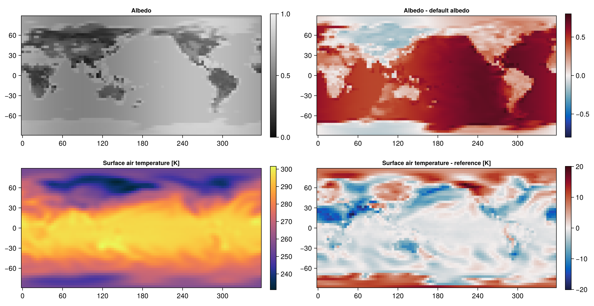
Monty Python: A wise old sage said point three
path: /submissions/constant.jl
rank: 12. of 13 submissions
name = "Monty Python"
description = "A wise old sage said point three"
# the same albedo everywhere, ignoring all inputs
albedo(inputs) = 0.3
Evaluation, RMSE in Kelvin:
score: 5.0965land_score: 8.5151ocean_score: 2.7244tropical_score: 3.0995polar_score: 10.7896generalisation_score: 3.7879
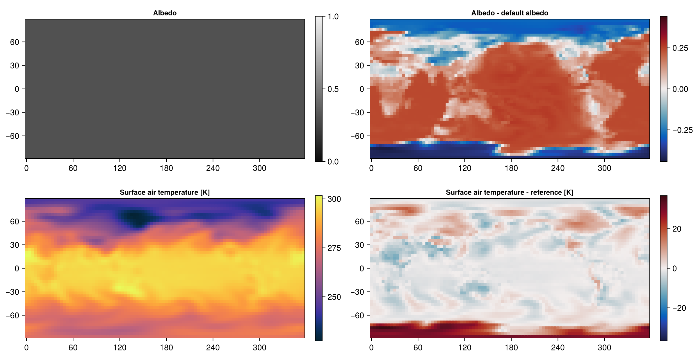
Brian: Bright sea ice, dark ocean
path: /submissions/sea_ice.jl
rank: 13. of 13 submissions
name = "Brian"
description = "Bright sea ice, dark ocean"
function albedo(inputs)
(; sea_ice_concentration) = inputs
# linear blend between dark open ocean and bright sea ice
a = 0.06 * (1 - sea_ice_concentration) + 0.6 * sea_ice_concentration
return clamp(a, 0, 1)
end
Evaluation, RMSE in Kelvin:
score: 6.6502land_score: 11.3344ocean_score: 3.2619tropical_score: 2.4739polar_score: 15.6961generalisation_score: 4.7073
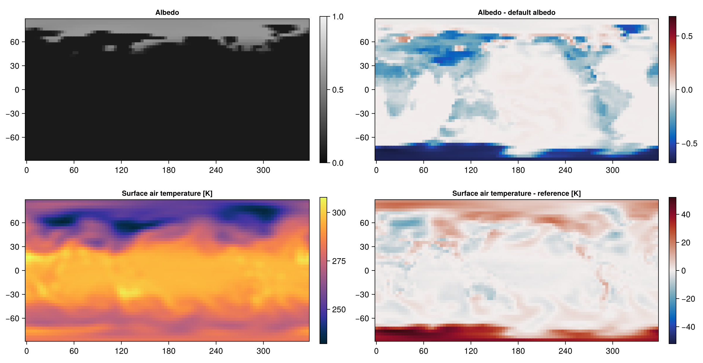